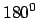

Next: 3 Configuration 1: Pitch-Pitch Up: multicube-clawar Previous: 1 Introduction
The three configurations developed are based on the Y1 modules
(Figure ![[*]](crossref.png) b), designed for the Cube
worm-like robot[9]. The rotation
range is b. These modules are inspired in Polybot
G1, designed by Mark Yim at PARC.
b), designed for the Cube
worm-like robot[9]. The rotation
range is b. These modules are inspired in Polybot
G1, designed by Mark Yim at PARC.